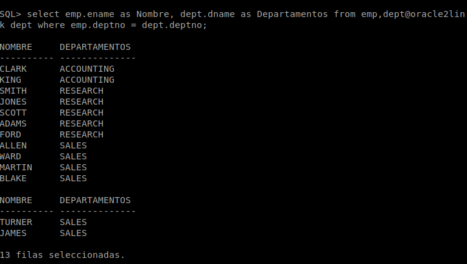
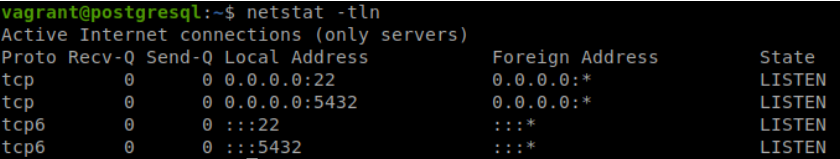
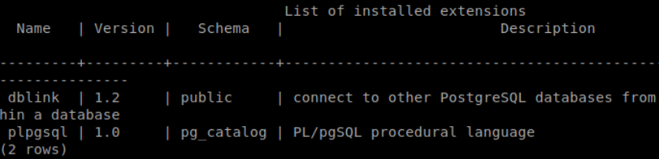
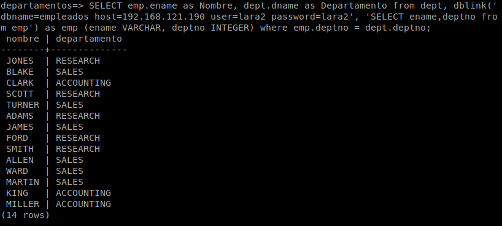
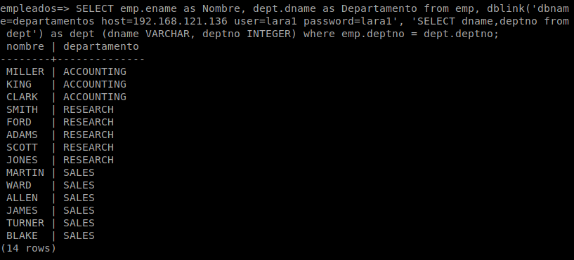
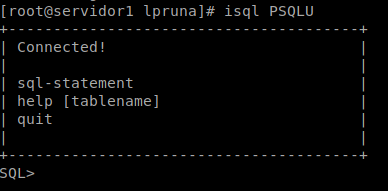
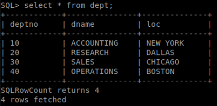
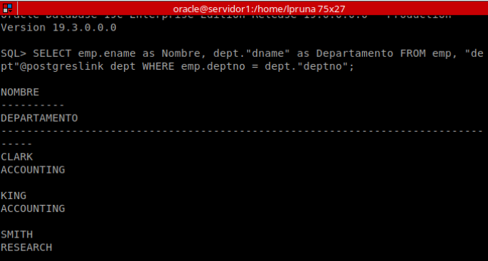
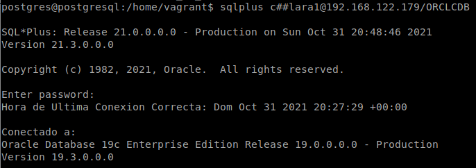
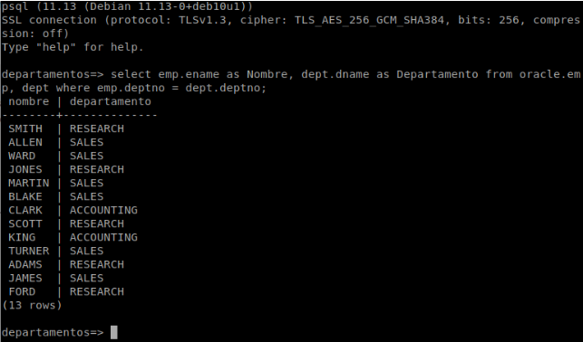

La interconexión de bases de datos es una práctica muy útil que nos permite vincular dos o más servidores para poder relacionar los datos y gestionarlos en conjunto. En este artículo, aprenderemos a interconectar dos servidores de bases de datos: dos servidores de Oracle, dos servidores de PostgreSQL, y uno de Oracle y otro de PostgreSQL.
 Dos servidores de Oracle
Dos servidores de Oracle
Para empezar, contamos con dos servidores Oracle 19c sobre Centos 8, ambas configuradas para el acceso remoto y con una base de datos. El objetivo de esta estructura es que un mismo cliente pueda acceder a las dos bases de datos de manera simultánea e indirecta, de modo que ambos servidores estén conectados entre sí. El primer servidor tiene la IP 172.22.7.169, y el segundo servidor tiene la IP 172.22.0.27.
Una vez preparadas las máquinas, lo primero que he hecho es conectarme con el usuario oracle y crear un usuario nuevo en cada servidor:
- Servidor 1:
create user c##lara1 identified by lara1;
grant connect to c##lara1;
grant resource to c##lara1;
grant unlimited tablespace to c##lara1;
- Servidor 2:
create user c##lara2 identified by lara2;
grant connect to c##lara2;
grant resource to c##lara2;
grant unlimited tablespace to c##lara2;
A continuación, comprobamos que el segundo servidor tiene conectividad:
[oracle@servidor1 ~]$ tnsping 172.22.0.27
TNS Ping Utility for Linux: Version 19.0.0.0.0 - Production on 22-OCT-2021 12:39:48
Copyright (c) 1997, 2019, Oracle. All rights reserved.
Used parameter files:
/opt/oracle/product/19c/dbhome_1/network/admin/sqlnet.ora
Used HOSTNAME adapter to resolve the alias
Attempting to contact (DESCRIPTION=(CONNECT_DATA=(SERVICE_NAME=))(ADDRESS=(PROTOCOL=tcp)(HOST=172.22.0.27)(PORT=1521)))
OK (0 msec)
[oracle@servidor2 dbhome_1]$ tnsping 172.22.7.169
TNS Ping Utility for Linux: Version 19.0.0.0.0 - Production on 22-OCT-2021 12:38:43
Copyright (c) 1997, 2019, Oracle. All rights reserved.
Used parameter files:
/opt/oracle/product/19c/dbhome_1/network/admin/sqlnet.ora
Used HOSTNAME adapter to resolve the alias
Attempting to contact (DESCRIPTION=(CONNECT_DATA=(SERVICE_NAME=))(ADDRESS=(PROTOCOL=tcp)(HOST=172.22.7.169)(PORT=1521)))
OK (10 msec)
 Vemos que ambos servidores están conectados entre sí.
Vemos que ambos servidores están conectados entre sí.
El siguiente paso es añadir una entrada en el fichero tnsnames.ora, para que cada servidor conozca la ruta hacia el otro. En el fichero del primer servidor he añadido una entrada referida al segundo servidor a la que llamado “ORACLE2”, y donde he especificado el puerto y la IP del primer servidor:
ORACLE2 =
(DESCRIPTION =
(ADDRESS = (PROTOCOL = TCP)(HOST = 172.22.0.27)(PORT = 1521))
(CONNECT_DATA =
(SERVER = DEDICATED)
(SERVICE_NAME = ORCLCDB)
)
)
Mientras que en el fichero tnsnames.ora del segundo servidor para acceder al primer servidor con los datos de este:
ORACLE1 =
(DESCRIPTION =
(ADDRESS = (PROTOCOL = TCP)(HOST = 172.22.7.169)(PORT = 1521))
(CONNECT_DATA =
(SERVER = DEDICATED)
(SERVICE_NAME = ORCLCDB)
)
)
Ahora entramos en cada servidor para crear el enlace especificando el usuario y contraseña que hemos creado en la otra máquina, así como el alias que le hemos puesto en el fichero tnsnames.ora:
- En el servidor 1:
SQL> create database link oracle2link connect to c##lara2 identified by lara2 using 'oracle2';
- En el servidor 2:
SQL> create database link oracle1link connect to c##lara1 identified by lara1 using 'oracle1';
Para probar su funcionamiento, he creado tablas distintas en cada servidor, en la primera tengo la tabla de empleados, y en la segunda, la de departamentos. Si hacemos una consulta desde el primer servidor a tablas del segundo servidor, veremos que nos devuelve dichos datos:
select emp.ename as Nombre, dept.dname as Departamentos from emp,dept@oracle2link dept where emp.deptno = dept.deptno;

Como vemos en la imagen, se han unido ambos servidores para mostrarnos datos que están relacionados entre sí.
 Dos servidores de PostgreSQL
Dos servidores de PostgreSQL
Esta vez, he creado un escenario en Vagrant con dos nodos, que tienen las siguientes direcciones IP:
- Servidor 1: 192.168.121.136
- Servidor 2: 192.168.121.190
En ambas máquinas tengo un servidor PostgreSQL instalado y configurado para el acceso remoto. En el primer servidor he metido la tablas de departamentos de Scott, mientras que en el segundo servidor he insertado la de empleados. A continuación, he creado un usuario distinto en cada nodo:
- Servidor 1:
create user lara1 with password 'lara1';
grant connect on database departamentos to lara1;
grant usage on schema public to lara1;
- Servidor 2:
create user lara2 with password 'lara2';
grant connect on database empleados to lara2;
grant usage on schema public to lara2;
Con el comando netstat, nos aseguramos de que ambas máquinas se encuentran en escucha (recordad que el puerto por defecto de PostgreSQL es 5432):

Ahora que ya están listos los dos servidores, procederemos a crear el enlace entre ambos. Para ello, es necesario que tengan instalado el paquete postgresql-contrib:
sudo apt install postgresql-contrib
Una vez instalado el paquete en ambos nodos, nos conectamos con el usuario postgres, entramos en nuestra base de datos y creamos el enlace:
- Servidor 1:
su postgres
psql -d departamentos
departamentos=# create extension dblink;
- Servidor 2:
su postgres
psql -d empleados
empleados=# create extension dblink;
 Al ejecutar
Al ejecutar \dx, comprobaremos que hemos creado la extensión “dblink”:

Salimos de la base de datos y volvemos a entrar pero con el usuario que hemos creado antes, con el que probaremos el enlace con el otro servidor, mostrando los nombres de empleados junto con el de su departamento correspondiente:
- Servidor 1:
psql -h localhost -U lara1 -d departamentos

- Servidor 2:
psql -h localhost -U lara2 -d empleados

 Consejo para una mayor comodidad
Consejo para una mayor comodidad
En lugar de tener que definir siempre el enlace en la propia consulta, podemos hacer un select del mismo una sola vez y darle un nombre:
SELECT dblink_connect('dblink1','dbname=departamentos host=192.168.121.136 user=lara1 password=lara1');
Después, solo sacaríamos los datos dando el nombre del enlace:
SELECT * FROM dblink('dblink1','SELECT dname,deptno FROM dept') AS dept (dname VARCHAR,deptno INTEGER);
Un Oracle y un PostgreSQL
Para esta última parte, he creado una máquina de Vagrant con Debian Buster, que he configurado como en el apartado anterior, y también he aprovechado la primera máquina de Centos 8 con Oracle del primer apartado.
Estas son las direcciones IP de los servidores:
- Servidor de Oracle: 192.168.122.179
- Servidor de PostgreSQL: 192.168.122.172
En el servidor de Oracle tengo creado el usuario c##lara1 y la tabla de Empleados (emp), mientras que en PostgreSQL he generado el usuario lara2 y la tabla de Departamentos (dept). Partiendo de la base de que ambos servidores se encuentran listos y configurados para el acceso remoto, ahora tendríamos que solventar el problema de enlazar dos gestores de bases de datos distintas.

El método es distinto dependiendo del gestor desde el que realicemos el enlace.
De Oracle a PostgreSQL
Para permitir el acceso de Oracle a PostgreSQL, recurriremos al driver ODBC (Open Database Connectivity), con el que podremos acceder a cualquier dato de cualquier gestor de bases de datos. Primero, instalaremos en Oracle las últimas versiones del paquete unixODBC y, puesto que queremos acceder a PostgreSQL, también el paquete postgresql-odbc:
sudo su
dnf update && dnf install unixODBC postgresql-odbc
Una vez finalizada la instalación, modificamos el fichero /etc/odbcinst.ini, que contiene la configuración de todos los drivers ODBC:
nano /etc/odbcinst.ini
Como solo necesitaremos el driver ODBC de PostgreSQL, nos quedaremos solo con este y comentaremos el resto de ellos. En la configuración de PostgreSQL, veremos una descripción del mismo y una serie de rutas a las diferentes librerías:
[PostgreSQL]
Description = ODBC for PostgreSQL
Driver = /usr/lib/psqlodbcw.so
Setup = /usr/lib/libodbcpsqlS.so
Driver64 = /usr/lib64/psqlodbcw.so
Setup64 = /usr/lib64/libodbcpsqlS.so
FileUsage = 1
A continuación, creamos un DSN (Data Source Name) en el fichero /etc/odbc.ini, donde se indica el modo de conexión con el gestor de bases de datos:
nano /etc/odbc.ini
Dentro del fichero, introducimos el driver de PostgreSQL (el que hemos visto en el fichero anterior), la dirección IP del servidor de PostgreSQL, el usuario y contraseña que hemos creado en dicho gestor, y el nombre de la base de datos a la que queremos acceder:
[PSQLU]
Debug = 0
CommLog = 0
ReadOnly = 0
Driver = PostgreSQL
Servername = 192.168.122.172
Username = lara2
Password = lara2
Port = 5432
Database = departamentos
Trace = 0
TraceFile = /tmp/sql.log
 Ya hemos finalizado con la configuración del driver.
Ya hemos finalizado con la configuración del driver.
Ahora procederemos a probar la conexión con el binario isql que viene con el paquete que hemos instalado:
 
Comprobamos que podemos conectarnos a PostgreSQL y que podemos sacar los datos de la tabla. Lo siguiente que haremos es crear un fichero en $ORACLE_HOME/hs/admin con los parámetros necesarios para que Oracle pueda hacer uso del driver.
nano /opt/oracle/product/19c/dbhome_1/hs/admin/initPSQLU.ora
Añadimos el siguiente contenido:
HS_FDS_CONNECT_INFO = PSQLU
HS_FDS_TRACE_LEVEL = DEBUG
HS_FDS_SHAREABLE_NAME = /usr/lib64/psqlodbcw.so
HS_LANGUAGE = AMERICAN_AMERICA.WE8ISO8859P1
set ODBCINI=/etc/odbc.ini
A continuación, configuramos el listener de Oracle, especificando el driver que tendrá en cuenta a la hora de escuchar peticiones:
nano /opt/oracle/product/19c/dbhome_1/network/admin/listener.ora
Dentro del fichero, introducimos una entrada para el driver ODBC:
LISTENER =
(DESCRIPTION_LIST =
(DESCRIPTION =
(ADDRESS = (PROTOCOL = TCP)(HOST = 192.168.122.179)(PORT = 1521))
(ADDRESS = (PROTOCOL = IPC)(KEY = EXTPROC1521))
)
)
SID_LIST_LISTENER =
(SID_LIST =
(SID_DESC =
(SID_NAME = PSQLU)
(ORACLE_HOME=/opt/oracle/product/19c/dbhome_1)
(PROGRAM=dg4odbc)
)
)
Después, incluimos una entrada en el fichero tnsnames.ora:
nano /opt/oracle/product/19c/dbhome_1/network/admin/tnsnames.ora
Esta es el contenido que he añadido:
PSQLU =
(DESCRIPTION=
(ADDRESS=(PROTOCOL=tcp)(HOST=192.168.121.136)(PORT=1521))
(CONNECT_DATA=(SID=PSQLU))
(HS=OK)
)
Nos conectamos con el usuario oracle y reiniciamos el listener:
su oracle
lsnrctl stop
lsnrctl start
Solo nos queda crear el enlace, por lo que accedemos a sqlplus:
[oracle@servidor1 lpruna]$ sqlplus c##lara1
SQL*Plus: Release 19.0.0.0.0 - Production on Sun Oct 31 19:39:17 2021
Version 19.3.0.0.0
Copyright (c) 1982, 2019, Oracle.
All rights reserved.
Enter password:
Hora de Ultima Conexion Correcta: Dom Oct 31 2021 11:02:10 +01:00
Conectado a:
Oracle Database 19c Enterprise Edition Release 19.0.0.0.0 - Production
Version 19.3.0.0.0
SQL> create database link postgreslink connect to "lara2" identified by"lara2" using 'PSQLU';
Enlace con la base de datos creado.
Finalmente, probamos el funcionamiento del enlace realizando una consulta de ambas tablas:

 ¡Ojo cuidao!
¡Ojo cuidao!
Es importante que las columnas y tablas pertenecientes al servidor remoto las pongamos entre comillas dobles, y que la directiva SELECT se encuentre en mayúscula.
De PostgreSQL a Oracle
Para realizar la conexión desde PostgreSQL, emplearemos oracle_fdw para poder acceder a una base de datos de Oracle desde otro gestor. Empecemos por instalar los siguientes paquetes:
apt update && apt install libaio1 postgresql-server-dev-all build-essential git
En siguiente lugar, descargaremos los paquetes de Oracle Instant Client, para instalar en el servidor un cliente Oracle y poder conectarnos a la base de datos del otro servidor. Como posteriormente usaremos los binarios con el usuario postgres, nos conectamos como tal:
su postgres
cd ~
wget https://download.oracle.com/otn_software/linux/instantclient/211000/instantclient-basic-linux.x64-21.1.0.0.0.zip
wget https://download.oracle.com/otn_software/linux/instantclient/211000/instantclient-sdk-linux.x64-21.1.0.0.0.zip
wget https://download.oracle.com/otn_software/linux/instantclient/211000/instantclient-sqlplus-linux.x64-21.1.0.0.0.zip
Descomprimimos los ficheros .zip, y después, como ya no nos harán falta, los borraremos:
unzip instantclient-basic-linux.x64-21.1.0.0.0.zip
unzip instantclient-sdk-linux.x64-21.1.0.0.0.zip
unzip instantclient-sqlplus-linux.x64-21.1.0.0.0.zip
rm *.zip
Ya tendremos nuestros binarios a disposición, aunque, para usarlos, tendríamos que introducir la ruta completa. Para ahorrarnos tiempo y para mayor comodidad, crearemos variables de entorno con la ruta del directorio principal de Oracle, y anexaremos la variable a $LD_LIBRARY_PATH y $PATH:
export ORACLE_HOME=/home/postgres/instantclient_21_1
export LD_LIBRARY_PATH=$LD_LIBRARY_PATH:$ORACLE_HOME
export PATH=$PATH:$ORACLE_HOME
Comprobamos que podemos acceder a los binarios sin escribir la ruta completa:
Ahora podemos realizar la conexión remota a la base de datos del servidor de Oracle:


El siguiente paso consistirá en realizar la compilación de oracle_fdw, por lo que descargamos el repositorio de GitHub con el código fuente. Debido a que la última versión me ha dado muchos problemas, me descargado el anterior release:
wget https://github.com/laurenz/oracle_fdw/archive/refs/tags/ORACLE_FDW_2_3_0.zip
unzip ORACLE_FDW_2_3_0.zip
Para evitar futuros problemas, le cambiamos el nombre al directorio extraído por oracle_fdw:
mv oracle_fdw-ORACLE_FDW_2_3_0/ oracle_fdw
Entramos en el directorio oracle_fdw, compilamos el código y realizamos la instalación:
cd oracle_fdw
make
make install
Al entrar en la base de datos e intentar crear la extensión, nos informarán de que el sistema no encuentra las librerías de oracle:
De modo que salimos y creamos el fichero /etc/ld.so.conf.d/oracle.conf y dentro añadimos las rutas a los directorios que contengan los ficheros .so, para que el sistema sepa llegar hasta las librerías y pueda cargarlas:
/home/postgres/instantclient_21_1
/usr/share/postgresql/11/extension
Ejecutamos el comando ldconfig, con el que se crearán los vínculos y caché necesarios a las librerías que se encuentren en los directorios que hemos especificado en el fichero creado, y reiniciamos el servicio de PostgreSQL:
sudo ldconfig
sudo systemctl restart postgresql
Ahora podremos crear la extensión:
Después de comprobar que tenemos nuestra extensión con \dx, creamos un nuevo esquema al que importaremos las tablas de la base de datos Oracle:
departamentos=# create schema oracle;
CREATE SCHEMA
Como el esquema que hemos creado está vacío, definiremos un servidor remoto que use la extensión que hemos generado antes, indicando la dirección IP y la base de datos que tenemos en Oracle:
departamentos=# create server oracle foreign data wrapper oracle_fdw options (dbserver '//192.168.122.179/ORCLCDB');
CREATE SERVER
En siguiente lugar, necesitamos mapear nuestro usuario local a uno existente en Oracle con los privilegios necesarios para acceder a las tablas. En otras palabras, haremos que nuestro usuario de PostgreSQL pueda acceder como el usuario de Oracle en las tablas en las que tiene privilegios:
departamentos=# create user mapping for lara2 server oracle options (user 'c##lara1', password 'lara1');
CREATE USER MAPPING
Otorgamos a nuestro usuario de PostgreSQL los privilegios para utilizar el esquema de Oracle y el servidor remoto:
departamentos=# grant all privileges on schema oracle to lara2;
GRANT
departamentos=# grant all privileges on foreign server oracle to lara2;
GRANT
Salimos del gestor y volvemos a entrar con el usuario que hemos creado antes para comprobar que podemos utilizar el enlace. Una vez dentro, importamos las tablas existentes en el esquema remoto al local, es decir, que el servidor de PostgreSQL accederá al de Oracle y realizará una copia de las tablas:
departamentos=> import foreign schema "C##LARA1" from server oracle into oracle;
IMPORT FOREIGN SCHEMA
Finalmente, hacemos la prueba y realizamos una consulta de ambas tablas:
